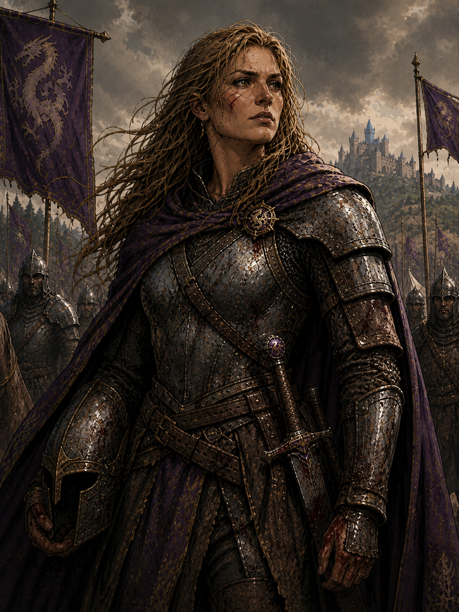

Alusair Nacacia Obarskyr
Cargo Regente de Cormyr por Azoun V Casa Casa Obarskyr Raza y clase Humana; exploradora 1/guerrera 8/caballero del Dragón Púrpura 3 (hoja de 1374 DR) Alineamiento Neutral bueno Edad en 1374 39 años Fuentes Cormyr (AD&D 2e) · Cormyr: A Novel · Beyond the High Road · Death of the Dragon · Crusade · The Siege · Elminster’s Daughter · Volo’s Guide to Cormyr · Cormyr: Land of the Purple Dragon
Alusair Nacacia Obarskyr gobierna un reino cuyo trono no le pertenece. La corona es de su sobrino Azoun V; la obligación de sostenerla mientras el niño crece recae sobre ella. La Princesa de Acero, que había buscado su lugar lejos de las salas de audiencia, es ahora la Regente de Acero. El cambio de nombre resume una pérdida antes que una ambición satisfecha: entre la guerrera y la regente quedan la muerte de su padre, la de su hermana y una guerra que dejó al país exhausto.1
Acero de campaña, acero de ceremonia
De aproximadamente 1,68 m de altura, tiene el cabello rubio ceniza y los ojos marrones, con el tono del roble y reflejos que pueden volverse ambarinos cuando sostiene la mirada de otro. La fuerza y la destreza a caballo son parte inseparable de su presencia. Antes de que nadie necesitara discutir cómo gobernaría, los hombres de su familia ya hablaban de su manera de montar, de su orgullo y de la rapidez con que buscaba el combate. Para ellos, incluso sus virtudes parecían conducirla hacia un ejército antes que hacia un trono.2
La armadura preparada para las primeras ceremonias de la regencia copió las medidas de su viejo arnés de campaña. Era de fino acero enano, estriada y grabada, con damasquinado dorado y el Dragón Real en relieve púrpura sobre el abdomen. Los armeros la habían ajustado y los servidores la habían pulido hasta dejarla resplandeciente. Alusair se sentía torpe y expuesta dentro de aquella perfección: el aspecto de una soberana podía resultar más incómodo que el equipo usado para sobrevivir en batalla.3
La espada conserva un lugar menos ambiguo en su vida. En 1373, recién levantada y todavía descalza, recibió una visita con el pelo revuelto, una bata amplia y el acero listo en la mano. El gesto no necesitaba ceremonia para expresar su disposición. Podía ofrecer asiento y compartir el caldo de la mañana sin dejar de estar preparada para responder a lo que entrara por la puerta.4
La hija que se fue
Nacida en 1335 DR, Alusair era la menor de las dos hijas de Azoun IV y Filfaeril. Tanalasta había nacido el año anterior. La corte no fue suficiente para la menor: huyó de ella, recorrió el mundo como aventurera y regresó con una experiencia que no había adquirido en las lecciones de palacio. Esa independencia no la apartó definitivamente de Cormyr. Volvió para combatir por él y ganó entre los Purple Dragons y la gente una consideración que, durante el reinado de su padre, solo superaba el propio rey.5
En 1360 DR luchó en la guerra contra los tuigan. No fue un mero acompañamiento dinástico: su hambre de batalla y su capacidad dentro de ella contribuyeron a que muchos vieran en la princesa una futura dirigente de los soldados del reino. La posibilidad de conducir Cormyr también comenzaba a insinuarse, aunque el deseo de Alusair siguiera otro camino. Una reputación militar podía crecer sin que quien la llevaba quisiera convertirla en una corona.6
En 1369 DR mandaba una compañía de jóvenes nobles por las Stonelands. Perseguían a orcos que habían atacado una caravana cerca de Eveningstar; Brace Skatterhawk y Beldred Truesilver estaban entre sus compañeros. Era una vida de cabalgadas, persecuciones y decisiones tomadas sobre el terreno. Los asuntos de Estado podían alcanzarla allí, pero no eran lo que había ido a buscar. La enfermedad de su padre bastaba, sin embargo, para recordar que ninguna distancia la separaba realmente del deber familiar.7
La guerra que dejó un niño en sus brazos
En 1370 DR investigó la desaparición de Emperel y los asuntos del Sleeping Sword. Mientras su familia esperaba verla en el cumpleaños de Azoun, la princesa estaba fuera y había retirado el anillo con el que podían alcanzarla. La comunicación mágica, que normalmente ayudaba a mantener unida a la familia, podía atraer un peligro distinto cuando los ghazneths estaban cerca. Estar incomunicada no significaba entonces simple rebeldía ni indiferencia hacia los suyos.8
La guerra de 1371 DR convirtió la capacidad militar en una cuestión de supervivencia. Su compañía sufrió pérdidas enormes; en uno de los combates finales le quedaban unos doscientos hombres, aproximadamente la mitad heridos. Aquella cifra no representaba la fuerza del reino, sino lo que quedaba alrededor de ella en un momento concreto. La Princesa de Acero compartió con sus soldados la reducción de una campaña a cuerpos agotados y armas que todavía podían sostenerse.9
Después trató de alcanzar mentalmente a Tanalasta. Lo intentó recordándola con toda la precisión que pudo reunir, pero no obtuvo respuesta. La certeza llegó de boca de Filfaeril: su hermana había muerto, aunque el niño vivía. Aún quedaba Azoun IV, herido de muerte, y Alusair estuvo junto a él en sus últimos momentos. La supervivencia de la dinastía se había estrechado hasta un recién nacido que todavía no podía comprender lo que todos esperaban de él.10
Vangerdahast puso la corona en manos de Alusair. Ella se resistió; el mago no le ofrecía una recompensa, sino la regencia hasta que Azoun V pudiera asumir el trono. Poco después estaba en el balcón, entre su madre y el viejo consejero, sosteniendo al niño mientras pasaban las compañías de los nobles. Aquellos hombres venían a mostrar obediencia. Filfaeril le enseñó a mirar también el poder que exhibían y el que la propia Alusair tenía entre los brazos.11
Gobernar sin dejar de ser Alusair
La guerra no había terminado con todas las amenazas. El país debía sostener a sus habitantes y defender la sucesión del niño frente a vecinos y ambiciones internas. La regente habría preferido cabalgar allí donde combatieran sus generales; ahora también debía permanecer donde las palabras de una audiencia podían decidir tanto como una carga. Filfaeril siguió a su lado para señalar qué nobles merecían confianza y cuáles exigían vigilancia. Owden Foley aceptó ayudar a educar al joven rey, manteniendo algo de la herencia de Tanalasta cerca de él.12
En 1372 DR, las conversaciones de Arabel con los representantes de Shade mostraron esa otra clase de combate. Myrmeen Lhal gobernaba una ciudad que necesitaba reconstruirse; la ayuda exterior podía ser valiosa y, al mismo tiempo, exigir que se examinaran cuidadosamente las intenciones de quien la ofrecía. Alusair no podía juzgar solo lo que una alianza prometía en el momento. Le correspondía decidir qué significaría para la independencia de Cormyr después.13
Su relación con los magos conserva el afecto de la educación compartida y la irritación de una tutela que no termina de desaparecer. Vangerdahast había enseñado a las dos princesas y servido a Azoun durante años; eso no vuelve aceptable que una decisión capaz de comprometer al reino se tome sin la regente. En 1373, una reunión con Caladnei, Myrmeen y Elminster mostró hasta qué punto podía enfurecerla quedar fuera de lo que otros resolvían sobre Cormyr.14
La cercanía tampoco vuelve suave su carácter. Alusair bromea, ordena y monta en cólera; su temperamento puede causar daño fuera de la batalla. No es una figura hecha únicamente de valor y sacrificio. La misma mujer que acepta cargar con la regencia arrastra una violencia que sus compañeros deben afrontar. La responsabilidad política no borra a la princesa que se rebelaba contra la corte: la obliga a responder, también, por aquello que hace cuando deja de contenerse.15
Rumores
Mucho antes de que gobernara, la corte discutía si podía hacerlo. Unos veían en ella el vigor de su padre; otros consideraban que la espada había ocupado el lugar de cualquier otra aptitud. Esos juicios sobrevivían con facilidad entre quienes preferían hablar de la sucesión en lugar de soportar sus consecuencias. La Alusair que aceptó la corona de regente ya había pagado un precio que sus críticos no compartían.16
Los comentarios sobre sus retiros en Stag Steads y su proximidad a jóvenes nobles forman parte de esa conversación cortesana. El refugio de caza real ofrece distancia del ceremonial, aunque nunca una separación completa de las miradas del reino. La intimidad de una princesa se vuelve asunto ajeno con demasiada facilidad; no por ello cada comentario anuncia un matrimonio, una alianza o un nuevo heredero.17
Estadísticas (D&D 3.5)
Hoja de juego · 1374 DR
| Tamaño/Tipo | Humanoide Mediano (humano) |
|---|---|
| Alineamiento | Neutral bueno |
| Características | Fue 24, Des 14, Con 15, Int 12, Sab 12, Car 15 |
| Dados de Golpe | (1d8)+(8d10)+(3d10)+24 (120 PG) |
| Iniciativa | +6 |
| Velocidad | 6 m |
| Clase de Armadura | 29, toque 15, desprevenido 27 |
| Ataque base/Presa | +12/+19 |
| Ataque | Longsword +3 (Vorpal) +23 c/c (1d8+12/17-20) |
| Ataque completo | Longsword +3 (Vorpal) +23/+18/+13 c/c (1d8+12/17-20) |
| Espacio/Alcance | 1,5 m/1,5 m |
| Salvaciones | Fort +16, Ref +10, Vol +9 |
| Dotes | CleaveYou can follow through with powerful blows. If you deal a creature enough damage to make it drop (typically by dropping it to below 0 hit points or killing it), you get an immediate, extra melee attack against another creature within reach. You cannot take a 5-foot step before making this extra attack. The extra…Player's Handbook, p.92, Combat ReflexesYou can respond quickly and repeatedly to opponents who let their defenses down.Player's Guide to Faerun, p.92, DiehardYou can remain conscious after attacks that would fell others. When reduced to between -1 and -9 hit points, you automatically become stable. You don't have to roll d% to see if you lose 1 hit point each round. When reduced to negative hit points, you may choose to act as if you were disabled, rather than dying.…Player's Handbook, p.93, Great CleaveYou can wield a melee weapon with such power that you can strike multiple times when you fell your foes. This feat works like Cleave, except that there is no limit to the number of times you can use it per round.Player's Handbook, p.94, Improved Critical (Longsword)Choose one type of weapon, such as longsword or greataxe. With that weapon, you know how to hit where it hurts.Player's Guide to Faerun, p.95, Improved InitiativeYou can react more quickly than normal in a fight.Unearthed Arcana, p.96, Iron WillYou have a stronger will than normal. You get a +2 bonus on all Will saving throws.Player's Handbook, p.96, LeadershipYou are the sort of person others want to follow, and you have done some work attempting to recruit cohorts and followers.Player's Guide to Faerun, p.97, Mounted CombatYou are skilled in mounted combat. Once per round when your mount is hit in combat, you may attempt a Ride check (as a reaction) to negate the hit. The hit is negated if your Ride check result is greater than the opponent's attack roll.Player's Handbook, p.98, Power AttackYou can make exceptionally powerful melee attacks. On your action, before making attack rolls for a round, you may choose to subtract up to 12 from all melee attack rolls and add the same number to all melee damage rolls.Player's Handbook, p.98, Ride-By AttackYou are skilled at making fast attacks for your mount. When you are mounted and use the charge action, you may move and attack as if with a standard charge and then move again.Player's Handbook, p.99, Spirited ChargeYou are trained at making a devastating mounted charge. When mounted and using the charge action, you deal double damage with a melee weapon (or triple damage with a lance).Player's Handbook, p.100, TrackYou can follow the trails of creatures and characters across most types of terrain.Player's Guide to Faerun, p.101, Weapon Focus (Longsword)You are especially good at using this specified weapon.Player's Guide to Faerun, p.102, Weapon Specialization (Longsword)Choose one type of weapon, such as greataxe, for which you have already selected the Weapon Focus feat. You can also choose unarmed strike or grapple as your weapon for purposes of this feat. You deal extra damage when using this weapon. You gain a +2 bonus on all damage rolls you make using the selected weapon.Player's Handbook, p.102 |
| Habilidades | AvistarAdvertir lo que está a la vista.6 rangos · Sab +7, DiplomaciaNegociar, persuadir y cambiar la actitud de los demás.6 rangos · Car +8, EscucharOír ruidos y conversaciones.6 rangos · Sab +7, IntimidarAmedrentar y desmoralizar.10 rangos · Car +12, MontarMontar y combatir a caballo.15 rangos · Des +19, Saber (local)Saber erudito de un campo concreto.4 rangos · Int +5, SupervivenciaOrientarse, rastrear y sobrevivir en la naturaleza.4 rangos · Sab +5, Trato con animalesAdiestrar y dirigir animales.8 rangos · Car +10, TreparTrepar muros, cuerdas y pendientes.4 rangos · Fue +7 |
| Cualidades especiales | Fear (Sp)Once per day, a 3rdlevel or higher Purple Dragon knight may evoke a fear effect that functions like the spell of the same name (caster level equals Purple Dragon knight's character level).Player's Guide to Faerun, p.69, Heroic Shield (Ex)Beginning at 1st level, when the Purple Dragon knight uses the aid another action (see page 154 of the Player's Handbook) to improve an ally's AC, his effort grants a +4 circumstance bonus instead of the normal +2.Player's Guide to Faerun, p.69, Inspire Courage (Su)Once per day at 2nd level, the Purple Dragon knight can make an inspirational speech to bolster his allies and himself against fear and improve the group's combat abilities. This ability functions like the inspire courage function of the bardic music ability. Each affected creature, including the knight himself,…Player's Guide to Faerun, p.69, Rallying Cry (Su)Three times per day, a Purple Dragon knight can utter a powerful shout (usually "For Cormyr!") that grants him a +1 morale bonus on his next attack roll and increases his land speed by 5 feet until his next turn. These same benefits also extend to each of his allies within 60 feet. Traditionally, the rallying cry…Player's Guide to Faerun, p.69, Favored Enemy (Ex)At 1st level, a ranger may select a type of creature from among those given on Table 3-14: Ranger Favored Enemies. Due to his extensive study on his chosen type of foe and training in the proper techniques for combating such creatures, the ranger gains a +2 bonus on Bluff, Listen, Sense Motive, Spot, and Survival…Player's Handbook, p.47, Wild Empathy +5Player's Handbook |
| Idiomas | Chondathan, Common, Dwarven |
Longsword +3 (Vorpal), Mithral Full Plate +2, Heavy Steel Shield +2, Ring of Protection +3, Ring of Freedom of Movement, Belt of Giant Strength +4, Cloak of Resistance +3
Hoja calculada con PCGen (D&D 3.5) · 1374 DR · descargar .pcg
Secretos (DM)
En 1373, Elminster informó a Alusair, Caladnei y Myrmeen de la intención de Vangerdahast de mantener grandes dragones en estasis para defender Cormyr. El proyecto se concibió en secreto; no constituye una fuerza pública bajo control personal de la regente.14
Alusair mantuvo una relación íntima con Malask Huntinghorn en 1373 y recuerda otra anterior con Glarasteer Rhauligan. Son vínculos mostrados en privado, sin matrimonio ni continuidad permanente demostrados.1518
Después de 1374
En 1384 DR, Azoun V asume el trono y termina la regencia. Alusair recibe el cargo de High Marshal. En 1390 DR acude al funeral de Estado, discute con su sobrino y después desaparece de la corte.19
Footnotes
-
Death of the Dragon, pp. 359, 368–371; Cormyr: Land of the Purple Dragon, p. 15. ↩
-
Cormyr: A Novel, pp. 19–20, 106; FRW → Curse of the Azure Bonds p.90; Heroes’ Lorebook pp.13–14; Cormyr: A Novel, edición inglesa1996 pp.95–111. ↩
-
Death of the Dragon, p. 369. ↩
-
Elminster’s Daughter, pp. 123–124. ↩
-
Cormyr (AD&D 2e), p. 43. ↩
-
Cormyr (AD&D 2e), p. 43; Crusade, pp. 121–145, 261–273. ↩
-
Cormyr: A Novel, pp. 93–107. ↩
-
Beyond the High Road, pp. 24–25, 137–138. ↩
-
Death of the Dragon, p. 328. ↩
-
Death of the Dragon, pp. 351–352, 357–359, 363–366. ↩
-
Death of the Dragon, pp. 368–371. ↩
-
Death of the Dragon, pp. 367, 369–371. ↩
-
The Siege, pp. 184–190. ↩
-
Cormyr (AD&D 2e), p. 44; Elminster’s Daughter, pp. 123–126. ↩ ↩2
-
Cormyr: A Novel, pp. 19–20, 119–122; Death of the Dragon, pp. 368–371. ↩
-
Volo’s Guide to Cormyr, p. 170. ↩
-
Death of the Dragon, pp. 351–352. ↩
-
Cormyr: Land of the Purple Dragon, p. 15. ↩